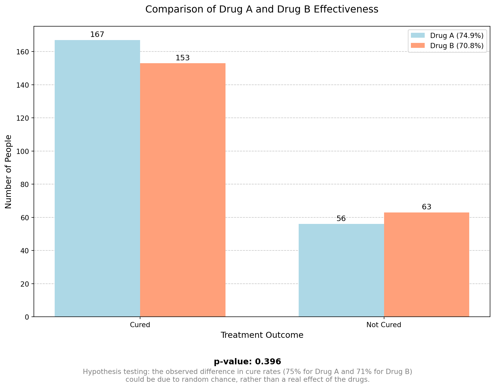
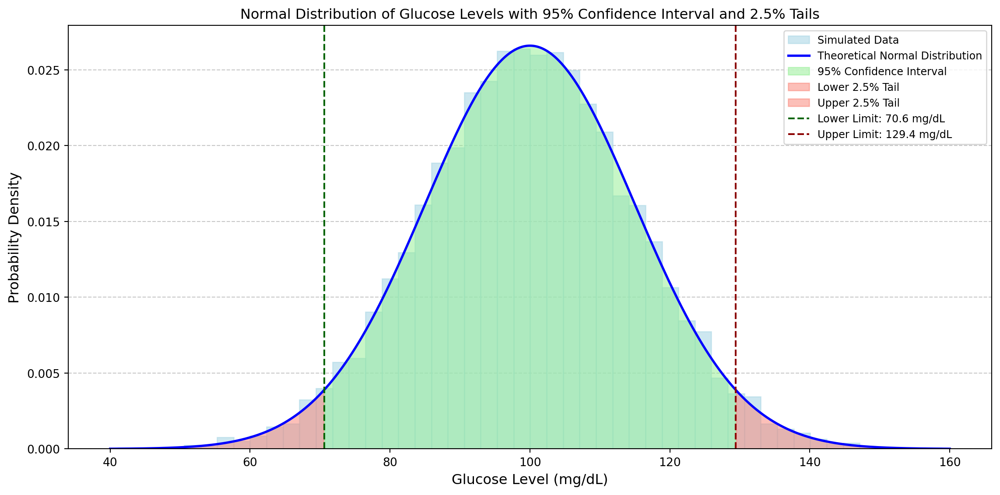
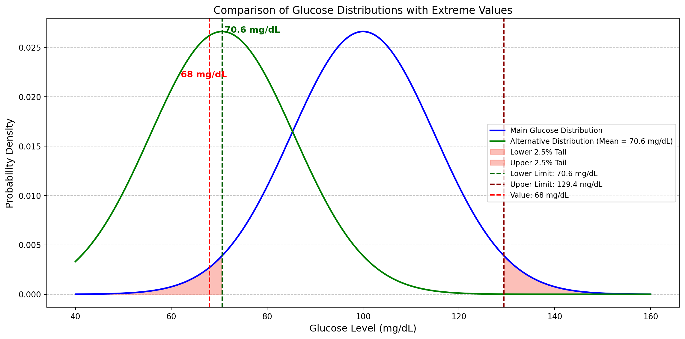
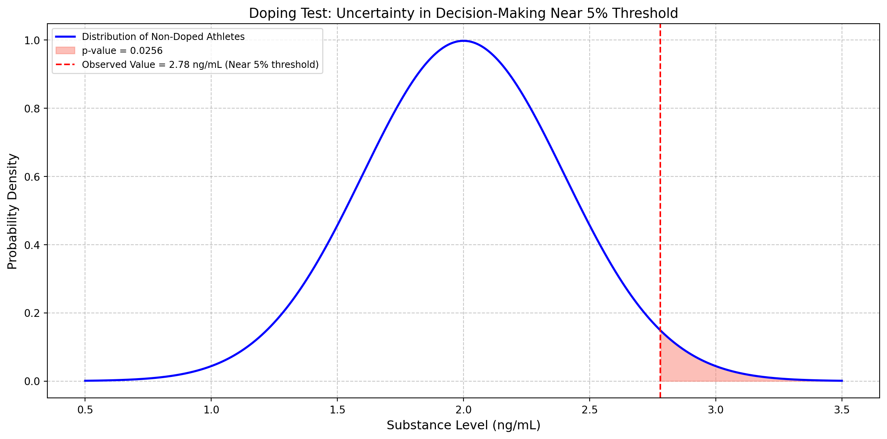
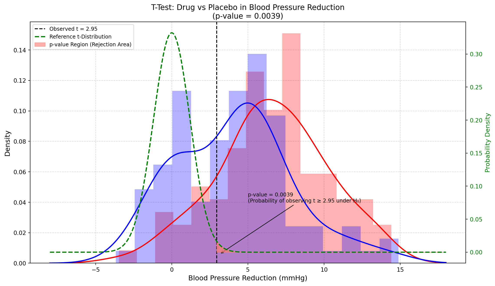
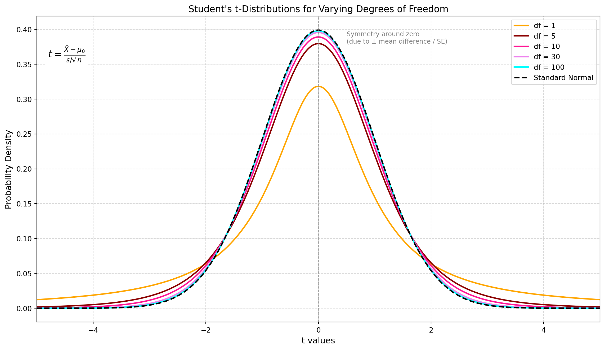
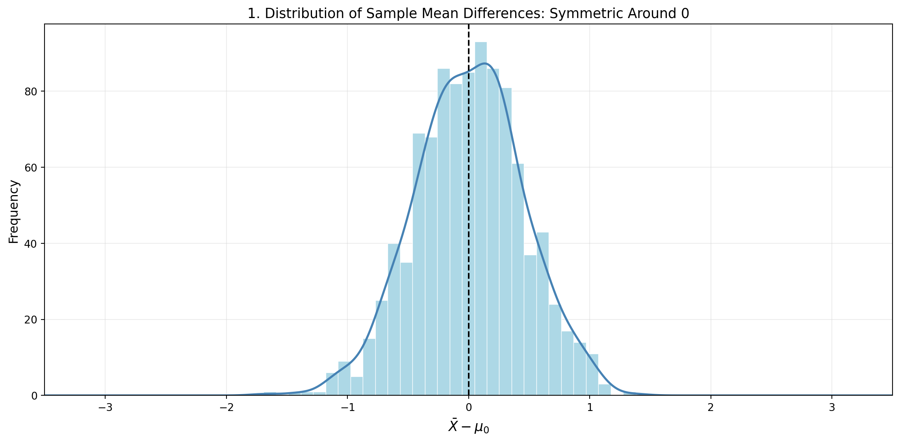
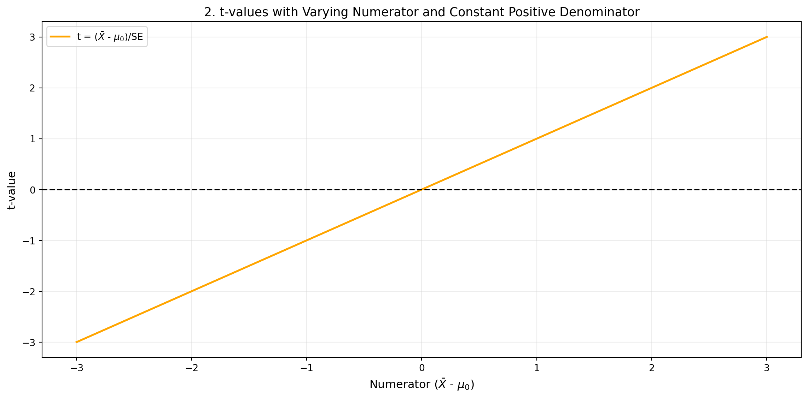
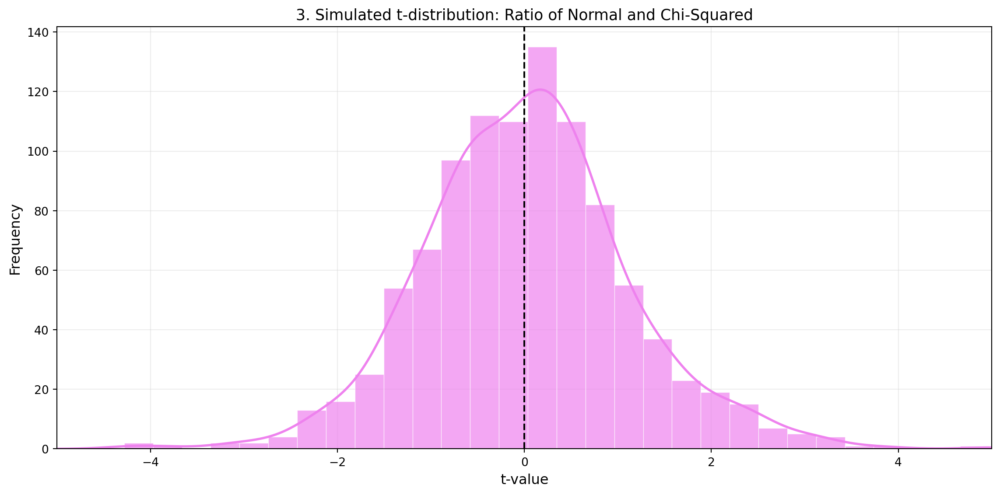

Understanding the p-value: Difference vs. Importance
methods
statistics
p-value
Imagine we have two drugs, A and B, given to two different patients. Drug A helps one patient, but drug B does not help the other. However, this does not prove that drug B doesn’t work. The second patient might have had an allergic reaction, or maybe drug A didn’t work, and the improvement was just a placebo effect. This is why scientists test drugs on many people, using a representative sample to get accurate results.
From the graph above, we can see that the study is not perfect, and there are always some random effects present. So, how can we be confident that Drug A is superior to Drug B?
That is where the p-value comes in: in this example, the p-value quantifies how confident we can be that Drug A is different from Drug B. The closer the p-value is to zero, the more confident we are that Drug A and Drug B are truly different.
But how small does the p-value have to be before we are sufficiently confident there is a difference? In practice, a commonly used threshold is 0.05. This means that if there is no difference between Drug A and Drug B, and we repeated the same experiment many times, only 5% of the time we would make the wrong decision.
A 0.05 threshold is a practical balance between accuracy and cost. It helps reduce false positives without making studies too expensive or difficult to run. If we set a lower threshold (like 0.01), we would need more participants or more repeated experiments to make sure the results are real and not just a random chance. This would require more time, money, and resources, making research much harder to conduct.
An important thing to remember in hypothesis testing is that a small p-value means that the difference is probably real, but it does not tell us if the difference is clinically or practically important. To understand how big the effect is, we need to look at other measures, such as:
- Effect size (e.g., Cohen’s d, odds ratio) to see the strength of the difference.
- Confidence intervals to check the possible range of the difference.
So, a low p-value does not automatically mean that the difference is meaningful or important.
When calculating probability and the p-value for a continuous variable, such as reaction times in a neuroscience experiment, a statistical distribution is used to model the data and assess the significance of the results. For example, the graph below represents the normal distribution of glucose levels in a population of 10,000 patients aged 18 to 70 years. The histogram displays the simulated glucose level data, and the curve represents the theoretical normal distribution with a mean of 100 mg/dL and a standard deviation of 15 mg/dL.

The green-shaded area represents the 95% confidence interval, which means that about 95% of the population’s glucose levels fall between:
- Lower limit: 70.6 mg/dL (dashed green line)
- Upper limit: 129.4 mg/dL (dashed red line)
The average value of the distribution is approximately 100 mg/dL. The 2.5% tails (red-shaded areas) each contain 2.5% of the population, meaning that only 5% of the population has glucose levels outside this range (potentially abnormal values).
From this example, 2.5% of the values are below 70.6 mg/dL, which are considered extremely low values. Another 2.5% are above 129.4 mg/dL, which are extremely high values. Together, these extreme values make up 5% of the data (2.5% + 2.5%). However, it is hard to say if a value is exactly on the borderline.
It is also possible that the extreme value of 70.6 mg/dL comes from a different distribution. But if we have a value just below 70.6 mg/dL (for example, 68 mg/dL), the p-value will be lower than the standard 5% threshold, and we can reject the hypothesis that it is normal to have a measurement of 68 mg/dL. This suggests that a different distribution (in green) for glucose makes more sense.

But does it make sense to consider 70.7 mg/dL “normal” and 68 mg/dL “abnormal” just because one is slightly inside the confidence interval (CI) and the other is just outside? A value slightly below the threshold (like 68 mg/dL) might not be abnormal but just a rare observation that still belongs to the main distribution. Therefore, we should move towards a more flexible interpretation instead of rigidly setting p < 0.05 as the only rule.
Another advantage of the use of a flexible alpha is the trade-off between Type I and Type II errors. With a higher threshold (p < 0.10), the risk of Type I error (false positives) increases, meaning we might conclude that an effect exists when it does not. However, if the threshold is too low (p < 0.05 or even p < 0.01), the risk of Type II error (false negatives) increases, meaning we might fail to detect an effect that truly exists. The conclusion is that in exploratory research, it is more important not to miss potential discoveries. Therefore, accepting a higher risk of false positives can be a strategic choice.
Psychology has faced a replication crisis, where many studies have failed to be successfully replicated. This has led to increased attention to statistical power and the interpretation of p-values. A significant study on this topic was published in 2015 by the Reproducibility Project: Psychology, where a team of researchers attempted to replicate 100 studies published in psychology journals. The results showed that only 36% of the replications yielded statistically significant results, compared to 97% of the original studies. Additionally, the effect sizes in the replications were, on average, half of those reported in the original studies. This highlighted issues related to low statistical power and overestimation of effects in the original research.
For further details, you can read the original article: Estimating the Reproducibility of Psychological Science: https://doi.org/10.1126/science.aac4716
Another relevant reading on this topic is the paper Justify Your Alpha, where the authors argue against a fixed significance level, stating that alpha should be justified based on the context rather than chosen arbitrarily. They also emphasize that scientific conclusions should be based on multiple lines of evidence, rather than relying solely on a p-value threshold: https://doi.org/10.1038/s41562-018-0311-x
In the research article Estimating the Reproducibility of Psychological Science, mentioned above, the impact of p-hacking on reproducibility is also discussed. The authors highlight that many original psychological studies achieved statistically significant results artificially due to p-hacking.
Doping Test Example: The Role of p-Value and Statistical Uncertainty
Doping tests in sports rely on statistical methods to determine whether an athlete’s substance level is naturally occurring or the result of performance-enhancing drugs. However, rigid application of statistical thresholds, such as the widely used 5% significance level (p-value < 0.05), can lead to arbitrary and questionable decisions when a test result is close to this threshold. This example explores the uncertainty in decision-making when an athlete’s test result has a p-value slightly above 5%, raising concerns about the fairness and reliability of a strict cutoff.

The threshold for doping tests is determined based on prior scientific measurements of the substance level in non-doped athletes. A large dataset of clean athletes is collected, and their substance levels are measured. From historical data, let’s assume that for non-doped athletes, the mean concentration is 2.0 ng/mL with a standard deviation of 0.5 ng/mL.
An athlete’s blood test results in a 2.78 ng/mL reading, and we must determine whether this is due to natural variation or doping:
- Null Hypothesis (H0): The athlete is not doped, and the value comes from the known normal distribution (μ = 2.0, σ = 0.5).
- Alternative Hypothesis (H1): The athlete is doped, meaning their value is significantly high.
The observed value of 2.78 ng/mL corresponds to a z-score of 1.56, and from the statistical table, the probability of obtaining a value greater than 2.78 under H0 is p = 0.0600, slightly above the 0.05 cutoff. A strict threshold means this athlete would not be declared doped, while another athlete with a slightly higher level (e.g., p = 0.0499) would face a ban. The small difference in p-value creates a grey area where an athlete’s career might depend on an arbitrary decision. This example highlights the limitations of rigid statistical thresholds. Statistics should inform decisions but not replace expert judgment in critical cases like doping investigations.
Graph Analysis Example: Drug vs. Placebo in Blood Pressure Reduction
This graph represents the results of a clinical study comparing the effectiveness of a drug versus a placebo in reducing blood pressure, based on two samples of 100 patients each.

- Horizontal Axis (X): Represents the difference in blood pressure reduction, likely measured in mmHg. Positive values indicate greater treatment efficacy.
- Left Vertical Axis (Y): Displays the probability density, indicating how frequently certain values are observed in the data.
- Right Vertical Axis (Green): Represents the probability density of the reference t-distribution.
- t-Distribution (Green Dashed Line): A probability distribution commonly used in statistics when sample sizes are limited. In this case, it serves as a theoretical reference to assess whether the observed difference between the drug and placebo could be attributed to chance.
- Observed t-Value (Black Vertical Line at t = 2.95): This represents the ratio between the observed mean difference between the two groups and the standard error of this difference. It quantifies how strong the drug’s effect is relative to data variability. The higher this value, the stronger the evidence supporting the drug’s effectiveness.
- Red Curve: Represents the distribution of blood pressure reduction values in the placebo group.
- Blue Curve: Represents the distribution of blood pressure reduction values in the drug-treated group.
The area where these curves overlap is relatively large, indicating considerable variability in individual responses: some patients in the placebo group experienced blood pressure reductions similar to those in the drug group. However, it is important to note that the statistical comparison is not made directly between these two distributions but rather about the reference t-distribution. What we are testing is not whether every single patient treated with the drug improves more than every patient in the placebo group but whether, on average, the drug produces a significantly different effect compared to the placebo.
How to Interpret the p-Value from the Graph
The p-value of 0.0039 is highly significant. The observed t-value (2.95) is represented by the black dashed vertical line. The red-shaded area to the right of this line represents the probability of observing such an extreme (or even more extreme) t-value if there were no difference between the drug and the placebo (i.e. if the null hypothesis were true). This area corresponds to the p-value of 0.0039 (approximately 0.4%).
What This Means in Simple Terms
A p-value this low indicates that it is extremely unlikely (only 0.39% probability) that the observed difference between the drug and placebo occurred by chance. Therefore, we can be fairly confident that the drug has a real effect in reducing blood pressure.
Kurtosis of the t-Distribution
Kurtosis is a statistical measure that describes how “peaked” or “heavy-tailed” a distribution is compared to the normal distribution. It indicates whether a distribution has:
- A higher peak and thinner tails (positive kurtosis or leptokurtic)
- A flatter peak and heavier tails (negative kurtosis or platykurtic)
- A shape similar to the normal distribution (zero kurtosis or mesokurtic)
The t-distribution (green dashed line) has a crucial property: its kurtosis depends on the degrees of freedom (df):
- With a low number of degrees of freedom, the t-distribution has heavier tails compared to the normal distribution, meaning extreme values are more likely.
- As the degrees of freedom increase, the t-distribution gradually approaches the normal distribution. When df > 30, it becomes almost indistinguishable from it.
In our specific case, with df = 198 (derived from two samples of 100 patients each: 100 + 100 - 2), the t-distribution is very similar to the normal distribution, but still retains a slightly higher probability in the tails. The more data we have, the more confident we can be in our conclusions. The t-distribution accounts for this uncertainty when calculating the p-value of 0.0039, making the statistical test methodologically robust.
Effect of Sample Size on the Variability of the t Statistic: A Monte Carlo Simulation
The Student’s t-distribution is a probability distribution commonly used in statistical tests, particularly when the sample size is limited and the population variance is unknown. It is similar to the normal distribution but with heavier tails, which reflects the greater uncertainty associated with small samples.
The curve represents the theoretical distribution of the t-statistic under the null hypothesis (H0), that is when it is assumed that there is no real difference between the groups (for example, that the drug has no effect compared to the placebo).

What influences the t-distribution is the Degree of Freedom (df), which is related to the sample size: df = n - 1. The lower the df, the heavier the tails and the flatter the peak, reflecting greater uncertainty in the estimate of the population standard deviation. On the contrary, the higher the sample size and the df, the more the distribution resembles the standard normal distribution Z, as the sample provides a more stable estimate of the variance.
An important property of the t-distribution is that it assumes symmetry. If the data are substantially skewed, the distribution may no longer be appropriate. It is always symmetric around zero under the null hypothesis.
The t-distribution is symmetric around zero due to the mathematical structure of the t-statistic, which measures how far the sample mean deviates from a hypothesized population mean, in units of the standard error:
\[t = \frac{\bar{X} - \mu_0}{\frac{s}{\sqrt{n}}}\]
The symmetry arises for three key reasons:
- The difference \(\bar{X} - \mu_0\) can be either positive or negative with equal probability.

- Since standard deviations and square roots are always non-negative, the denominator does not change the sign of the t-statistic. The denominator is always positive, so the sign of t depends only on the numerator. Because if the denominator is fixed (e.g. 1), then:
\[t = \frac{\bar{X} - \mu_0}{1} = \bar{X} - \mu_0\]
Therefore, t increases linearly with the numerator. For each value of the numerator, t assumes the same value. This generates the diagonal line with slope 1. About the symmetry, for every positive value of the numerator, there exists a corresponding negative value, and t assumes opposite values but with the same intensity (e.g. -2 and +2).

The t-distribution as a Ratio of Two Random Variables
The t-distribution originates from a ratio of two random variables: a normally distributed numerator (centred at zero) and a chi-squared distributed denominator (used in estimating the variance), which is independent of the numerator.
- Numerator: We generated 1000 samples from a standard normal distribution centred at 0 that can be positive or negative.
- Denominator: We generated 1000 samples from a chi-square distribution with 10 degrees of freedom, divided by 10 (to represent the sample variance), and calculated:
\[t = \frac{Z}{\sqrt{V/10}}\]
obtaining a simulation with 1000 t values, where:
- \(Z \sim \mathcal{N}(0,1)\): standard normal random variable (mean 0, variance 1)
- \(V \sim \chi^2(\nu)\): chi-squared random variable with \(\nu\) degrees of freedom
- \(\nu\): degrees of freedom

To summarize, the t-distribution is symmetric around zero due to its mathematical structure: it is the ratio of a normally distributed numerator (centred at zero) and a positive denominator (the standard error). Since the denominator cannot change the sign, the symmetry is entirely driven by the numerator’s equal likelihood of being positive or negative. Additionally, the independence between the normal numerator and the chi-squared-based denominator reinforces this symmetry, even with small sample sizes.